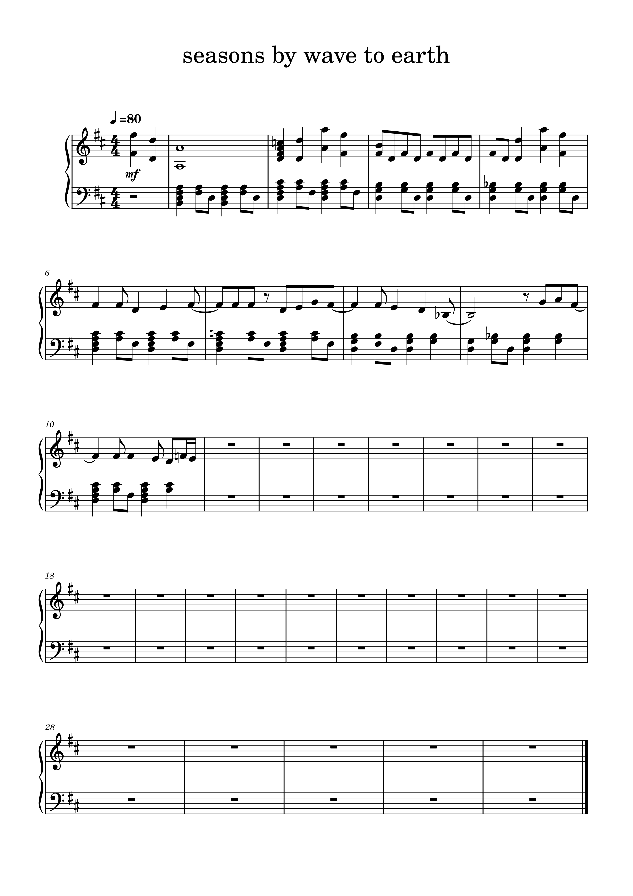

 I transcribed seasons by wave to earth from scratch, then made some edits. I changed the tempo from 72 beats per minute to 80 beats per minute. I also added in dynamics, 'mf' - mezzo forte meaning moderately loud. Furthermore, I changed the pitch of some notes throughout the piece.
When first using MuseScore, it was quite confusing as it is a software I had never used before. My piece starts with an anacrusis, I struggled to figure out how to input this, trying to add notes before the bar line would not work, I ended up having to look up how to do this as it was unclear how to from the options provided on MuseScore. Once I started transcribing the other notes of the piece it became easier, however it would add in rests to make up for what notes you hadn't inserted yet to make sure it matched the time signature, however this was rather frustrating as it them made it difficult when inserting notes after rests that were supposed to be in the score. Furthermore, I couldn’t work out how to tie notes together, other elements you could drag onto the page and place where needed, I had to play about a bit to work out you had to select the first note of the tie for it to insert. It was then very helpful and insured it was placed correctly and neatly.